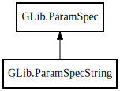

GLib.ParamSpecString – gobject-2.0 Reference Manual
Packages
gobject-2.0
GLib
ParamSpecString
ParamSpecString
cset_first
cset_nth
default_value
ensure_non_null
null_fold_if_empty
substitutor
ParamSpecString
Object Hierarchy:

Description:
[
CCode
( type_id =
"G_TYPE_PARAM_STRING"
) ]
public
class
ParamSpecString
:
ParamSpec
Namespace:
GLib
Package:
gobject-2.0
Content:
Creation methods:
public
ParamSpecString
(
string
name,
string
nick,
string
blurb,
string
? default_value,
ParamFlags
flags)
Fields:
public
string
cset_first
public
string
cset_nth
public
string
?
default_value
public
uint
ensure_non_null
public
uint
null_fold_if_empty
public
char
substitutor
Inherited Members:
All known members inherited from class GLib.ParamSpec
@ref
finalize
flags
get_blurb
get_default_value
get_name
get_name_quark
get_nick
get_qdata
get_redirect_target
name
owner_type
ref_sink
set_qdata
set_qdata_full
set_value_default
sink
steal_qdata
unref
value_convert
value_defaults
value_type
value_validate
values_cmp